Hard edges only
3px ink borders, 6px offset shadows, zero blur. Every element looks like it could be picked up and thrown.
Est. day 0 · still standing
Thick borders. Hard shadows. One very loud orange. No gradients, no fog, no tasteful beige — just a layout that keeps walking after the rest of the internet has fallen over.
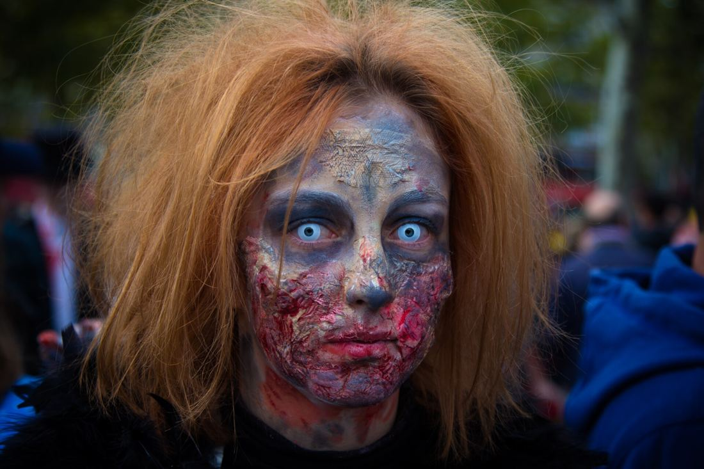
Twelve freely licensed photographs from Commons — zombie walks, cosplay, one civic sculpture. Click one to open it big.
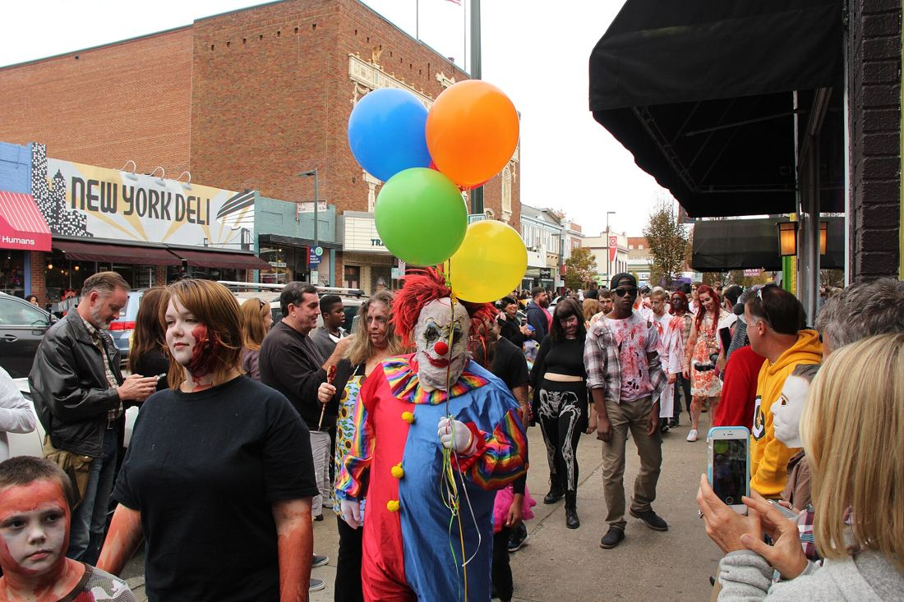
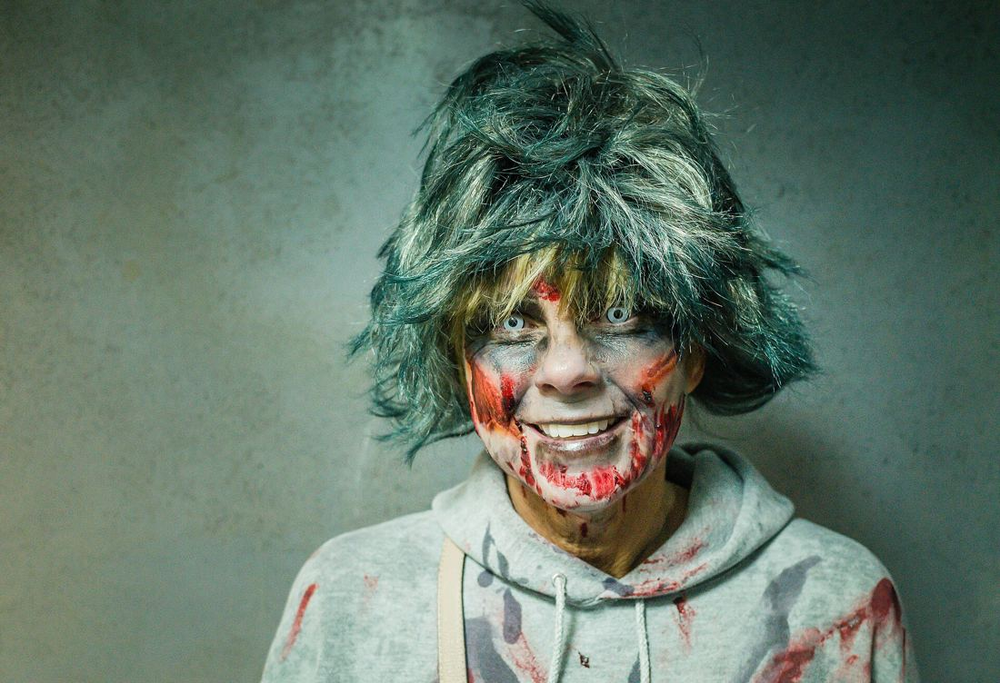
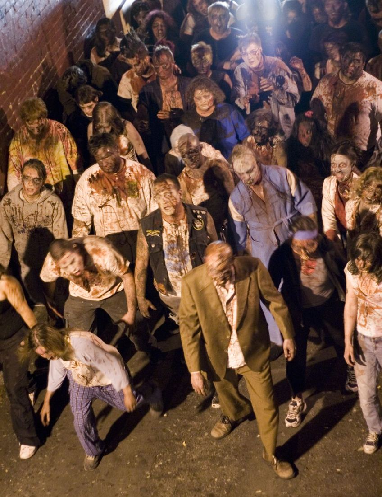
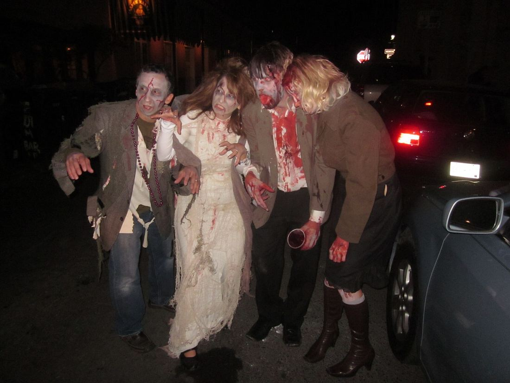
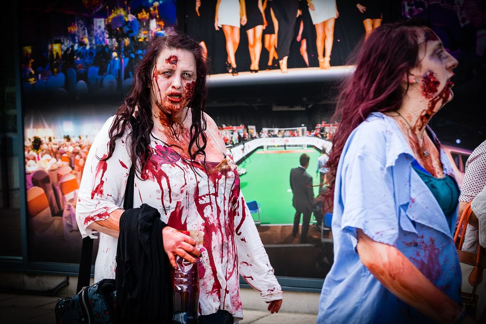
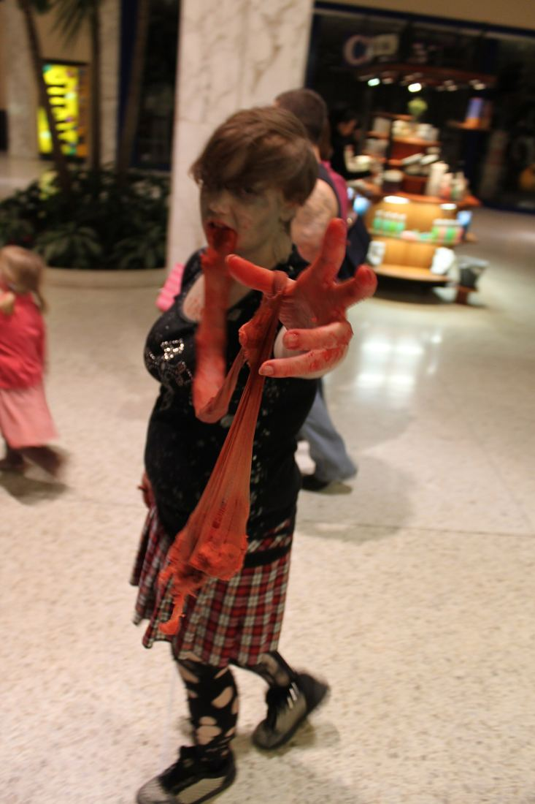
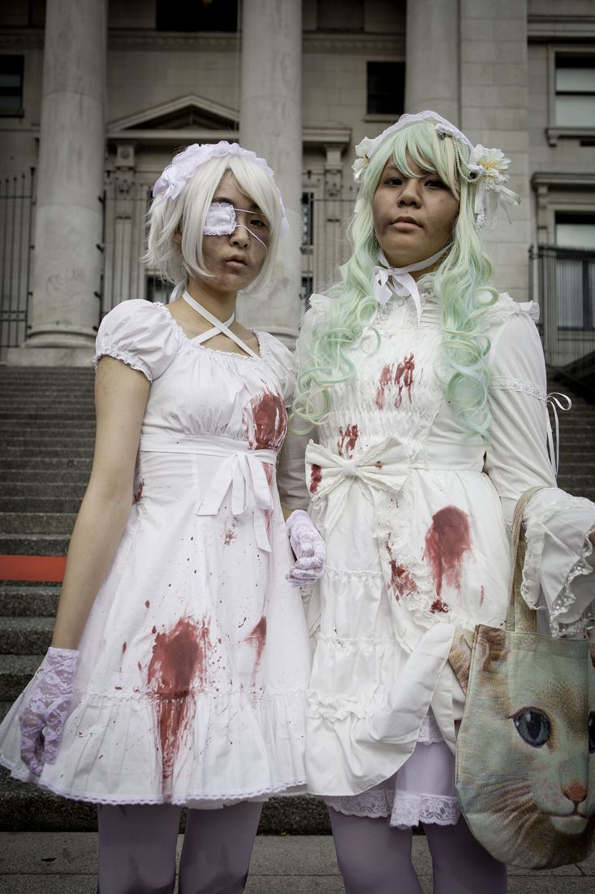
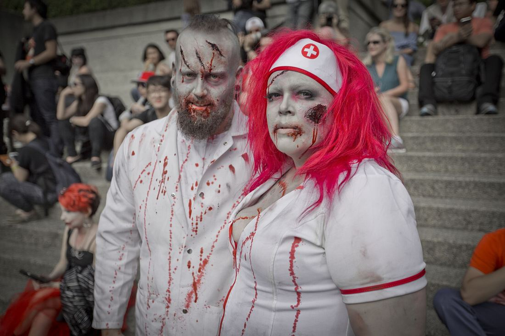
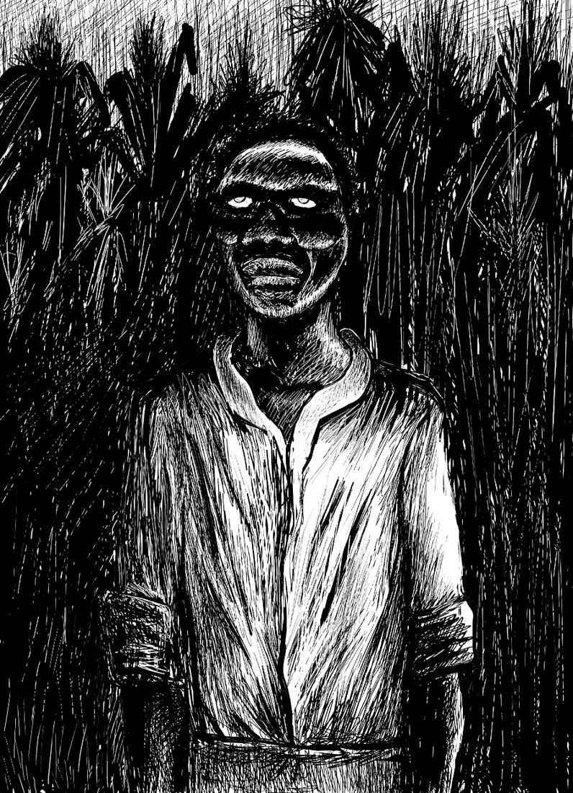
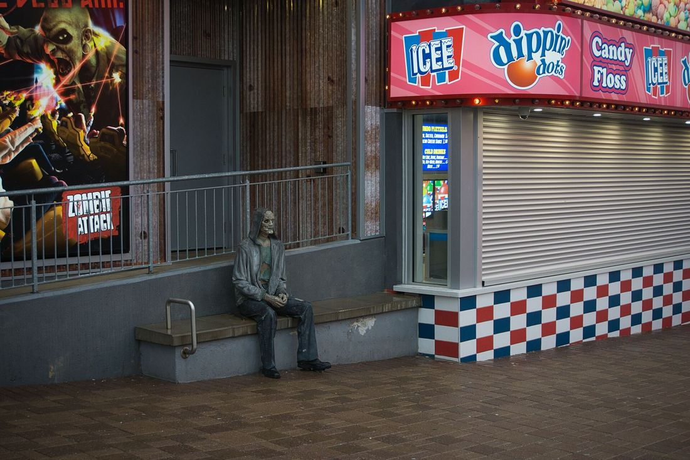
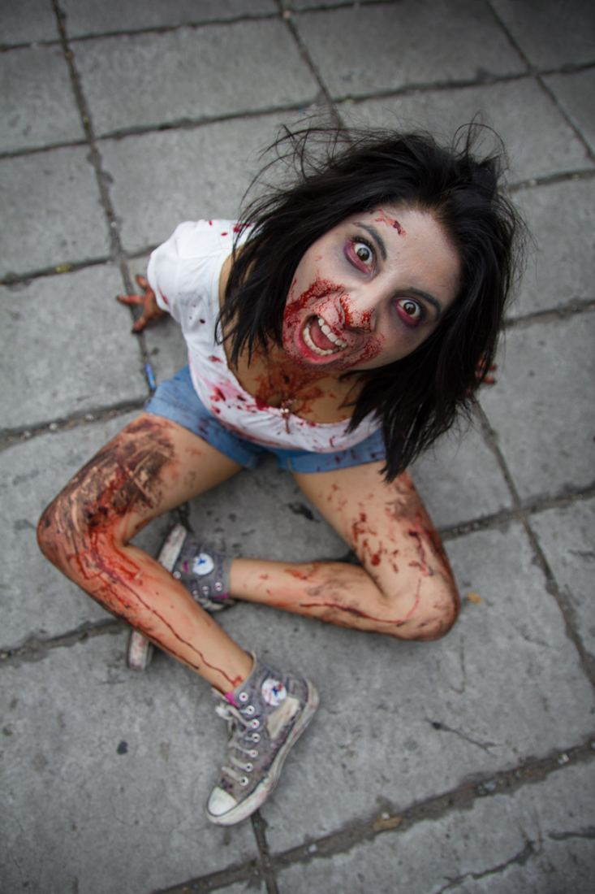
Three things this page is actually made of.
3px ink borders, 6px offset shadows, zero blur. Every element looks like it could be picked up and thrown.
A single orange doing all the shouting, on warm paper and near-black ink. Contrast checked, not guessed.
One marquee, one hover press, and a lightbox. All of it obeys prefers-reduced-motion.
Placeholder packaging. Names are free, numbers are not.
0/mo
Most infectious
490/mo
Talk/to us
Yes. That is the entire point. It is legible at a glance from across the room, which is more than most tasteful sites manage.
Wikimedia Commons, all under free licences — CC BY, CC BY-SA, one public domain, one Free Art License. Full credits are in the footer and in CREDITS.md.
Technically yes: one custom property, --orange. Politically, no.
No. It is placeholder written for a brief that said "zombie pictures". Send a real brief and it gets rewritten.
Tell us what it needs to sell and who has to approve it. We handle the borders.